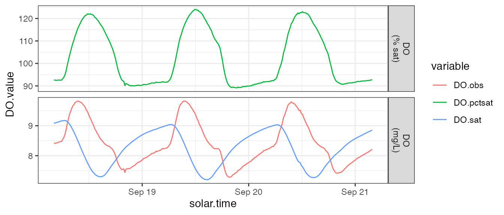
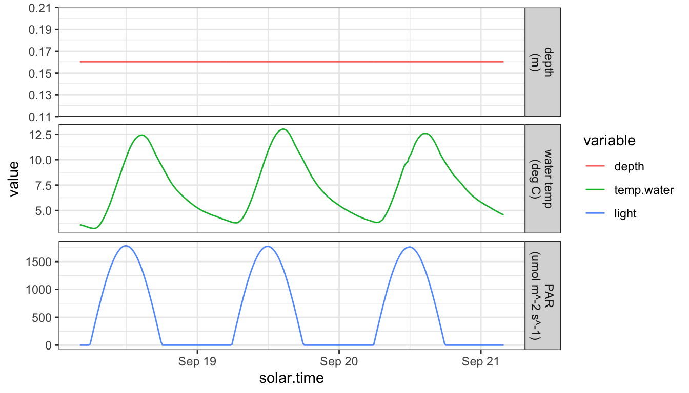

Data Preparation
Alison Appling and Bob Hall
2023-07-29
Source:vignettes/data_prep.Rmd
data_prep.RmdRequirements
A properly formatted input dataset for streamMetabolizer models has:
- exactly the right data columns and column names. Call
metab_inputs()to see the requirements for a specific model type. - data in the right units. See
?mm_datafor definitions of each column.
An input dataset may optionally include:
- partial days; partial days will be automatically excluded, so you don’t need to do this yourself.
- non-continuous days; no current streamMetabolizer models require continuous days.
Example
An example of a properly formatted input dataset is available in the streamMetabolizer package - data are from French Creek in Laramie, WY, courtesy of Bob Hall.
library(streamMetabolizer)
dat <- data_metab(num_days='3', res='15')Inspect the dimensions and column names of the data.
dim(dat)## [1] 288 6
dat[c(1,48,96,240,288),] # some example rows## solar.time DO.obs DO.sat depth temp.water light
## 5689 2012-09-18 04:05:58 8.41 9.083329 0.16 3.60 0.0000
## 5830 2012-09-18 15:50:58 8.36 7.403370 0.16 11.80 925.1370
## 5974 2012-09-19 03:50:58 8.17 8.927566 0.16 4.25 0.0000
## 6404 2012-09-20 15:50:58 8.35 7.358846 0.16 12.06 898.9231
## 6548 2012-09-21 03:50:58 8.21 8.854844 0.16 4.56 0.0000You can get additional information about the expected format of the
data in the ?metab help document. When preparing your own
data, make sure the class and units of your data match those specified
in that document.
Exploring input data
You can use other common R packages to graphically inspect the input data. Look for outliers and oddities to ensure the quality of your data.
dat %>%
mutate(DO.pctsat = 100 * (DO.obs / DO.sat)) %>%
select(solar.time, starts_with('DO')) %>%
gather(type, DO.value, starts_with('DO')) %>%
mutate(units=ifelse(type == 'DO.pctsat', 'DO\n(% sat)', 'DO\n(mg/L)')) %>%
ggplot(aes(x=solar.time, y=DO.value, color=type)) + geom_line() +
facet_grid(units ~ ., scale='free_y') + theme_bw() +
scale_color_discrete('variable')
labels <- c(depth='depth\n(m)', temp.water='water temp\n(deg C)', light='PAR\n(umol m^-2 s^-1)')
dat %>%
select(solar.time, depth, temp.water, light) %>%
gather(type, value, depth, temp.water, light) %>%
mutate(
type=ordered(type, levels=c('depth','temp.water','light')),
units=ordered(labels[type], unname(labels))) %>%
ggplot(aes(x=solar.time, y=value, color=type)) + geom_line() +
facet_grid(units ~ ., scale='free_y') + theme_bw() +
scale_color_discrete('variable')
Check the input data format
Your data need to have specific column names and units. To see what
is required, use the metab_inputs function to get a
description of the required inputs for a given model type. The output of
metab_inputs is a table describing the required column names, the
classes and units of the values in each column, and whether that column
is required or optional. The inputs are identical for the model types
‘mle’, ‘bayes’, and ‘night’, so here we’ll just print the requriements
for ‘mle’.
metab_inputs('mle', 'data')## colname class units need
## 1 solar.time POSIXct,POSIXt required
## 2 DO.obs numeric mgO2 L^-1 required
## 3 DO.sat numeric mgO2 L^-1 required
## 4 depth numeric m required
## 5 temp.water numeric degC required
## 6 light numeric umol m^-2 s^-1 required
## 7 discharge numeric m^3 s^-1 optionalAlso read through the help pages at ?metab and
?mm_data for more detailed variable definitions and
requirements.
Prepare the timestamps
To prepare your timestamps for metabolism modeling, you need to convert from the initial number or text format into POSIXct with the correct timezone (tz), then to solar mean time.
Step 1: POSIXct
Convert your logger-format data to POSIXct in a local timezone (with or without daylight savings, as long as you have that timezone scheme specified). Here are a few examples of specific scenarios and solutions.
Starting with numeric datetimes, e.g., from PMEs
If you have datetimes stored in seconds since 1/1/1970 at Greenwich (i.e., in UTC):
num.time <- 1471867200
(posix.time.localtz <- as.POSIXct(num.time, origin='1970-01-01', tz='UTC'))## [1] "2016-08-22 12:00:00 UTC"If you have datetimes stored in seconds since 1/1/1970 at Laramie, WY (i.e., in MST, no daylight savings):
num.time <- 1471867200
(posix.time.nominalUTC <- as.POSIXct(num.time, origin='1970-01-01', tz='UTC')) # the numbers get treated as UTC no matter what tz you request## [1] "2016-08-22 12:00:00 UTC"
(posix.time.localtz <- lubridate::force_tz(posix.time.nominalUTC, 'Etc/GMT+7')) # +7 = mountain standard time## [1] "2016-08-22 12:00:00 -07"Starting with text timestamps
If you have datetimes stored as text timestamps in UTC, you can
bypass the conversion to local time and just start with UTC. Then rather
than using calc_solar_time() in Step 2, you’ll use
convert_UTC_to_solartime().
text.time <- '2016-08-22 12:00:00'
(posix.time.utc <- as.POSIXct(text.time, tz='UTC'))## [1] "2016-08-22 12:00:00 UTC"If you have datetimes stored as text timestamps in EST/EDT (with daylight savings):
text.time <- '2016-08-22 12:00:00'
(posix.time.localtz <- as.POSIXct(text.time, format="%Y-%m-%d %H:%M:%S", tz='America/New_York'))## [1] "2016-08-22 12:00:00 EDT"If you have datetimes stored as text timestamps in EST (no daylight savings):
text.time <- '2016-08-22 12:00:00'
(posix.time.localtz <- as.POSIXct(text.time, format="%Y-%m-%d %H:%M:%S", tz='Etc/GMT+5'))## [1] "2016-08-22 12:00:00 -05"See https://en.wikipedia.org/wiki/List_of_tz_database_time_zones for a list of timezone names.
Starting with chron datetimes
If you have datetimes stored in the chron time format in
EST (no daylight savings):
chron.time <- chron::chron('08/22/16', '12:00:00')
time.format <- "%Y-%m-%d %H:%M:%S"
text.time <- format(chron.time, time.format) # direct as.POSIXct time works poorly
(posix.time.localtz <- as.POSIXct(text.time, format=time.format, tz='Etc/GMT+5'))## [1] "2016-08-22 12:00:00 -05"Step 2: Solar time
Now convert from local time to solar time. In
streamMetabolizer vocabulary, solar.time
specifically means mean solar time, the kind where every day is exactly
24 hours, in contrast to apparent solar time. You’re ready for this step
when you have the correct time in a local timezone and
lubridate::tz(yourtime) reflects the correct timezone.
lubridate::tz(posix.time.localtz) # yep, we want and have the code for EST## [1] "Etc/GMT+5"
(posix.time.solar <- streamMetabolizer::calc_solar_time(posix.time.localtz, longitude=-106.3))## [1] "2016-08-22 09:55:58 UTC"Other data preparation
streamMetabolizer offers many functions to help you prepare your data for modeling. We recommend that you explore the help pages for the following functions:
calc_depthcalc_DO_satcalc_lightconvert_date_to_doyhrconvert_localtime_to_UTCconvert_UTC_to_solartimeconvert_k600_to_kGASconvert_PAR_to_SW